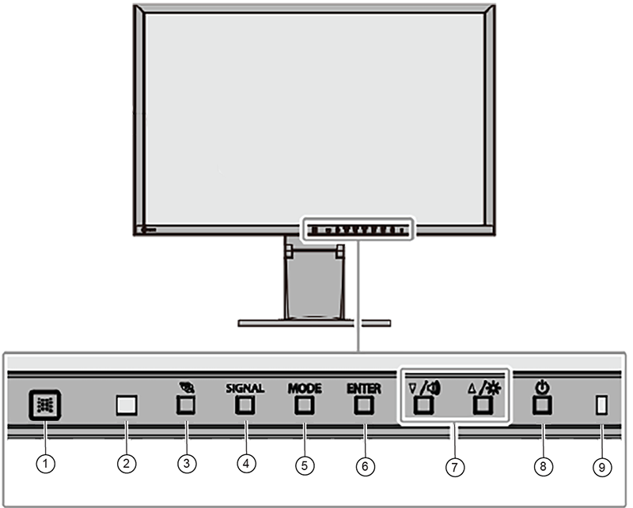
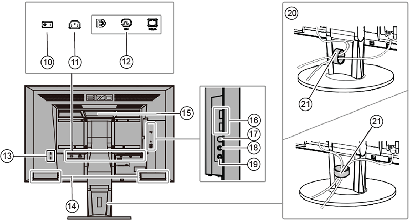

- 00000018WIA305B7F20GYZ
- id_131064804.23
- Oct 29, 2025, 1:49:47 PM
Setting up and calibrating the Global Operator Cabinet (GOC) monitor
Set up and calibrate the monitor for your system.
Select the LCD monitor being set up:
Setting up and calibrating the Eizo EV2430 24-inch monitor
Setting up the Eizo EV2430 24-inch monitor
- Make sure that you have read and understood the electrical safety requirements before starting this procedure. See Electrical Safety.
- Shut down and power off the host computer. See Shutting down the host computer.
- Apply GOC LOTO. See Applying LOTO - Global Operator Cabinet (GOC) and Operator Workspace.
- Remove the monitor from the box and set the monitor on the operator workspace table.
- Connect the Mini DP cable from the GOC to the Mini DP port on the monitor.
- Connect the power cables to the monitor.
- Route cables neatly to the back of the monitor base and the operator workspace.
Figure 1. Video cable connection – Eizo monitor 
Figure 2. Power cable connection – Eizo Monitor 
1 Factory preset is set to on. Note Make sure that only GE HealthCare product video hardware is connected to the GOC so that the software properly installs. - Turn on the monitor if not already on. Make sure that the main LCD monitor power is on. If not, press the Power On/Off button on the front panel.
- Put the monitor no closer than 41 cm (16 in) and no farther than 71 cm (28 in) from the eyes. The optimal distance is 61 cm (24 in) for either of the monitors.Note Allow the monitor to warm up for 20 minutes before doing any adjustments.
- Start up the GOC and log on as root.Note It is possible that the customer changed the default password. If you cannot log on, contact the customer for the correct password.
- Open Guided Install and select .
- Refer to the figure below and do the following:
- Make sure the correct video card is selected.
- If not, choose the correct video card model from the Video Card menu.
- If the correct video card is not listed, make sure the most recent MrApps software and Service Packs are loaded.
- Select LCD Monitor - Other as the Display Type.
- If this option is not available, use NEC LCD2490WUXi2.
Figure 3. System configuration panel – example 
- Make sure the correct video card is selected.
- Click Configure. Default gamma tables will be installed on the system.
- When complete, exit Guided Install and restart the system.
- Log on as root.Note It is possible that the customer changed the default password. If you cannot log on, contact the customer for the correct password.
- Adjust the monitor to customer preference. For details and recommended settings see LCD Monitor Screen Adjustments.
Calibrating the Eizo EV2430 24-inch monitor
Follow the directions below to calibrate the Eizo EV2430 24-inch monitor.
- Remove GOC LOTO. See Removing LOTO - Global Operator Cabinet (GOC) and Operator Workspace.
- Start up the host computer/system. See Starting up the host computer .
- Refer to the figure and table below for locations and descriptions of the Eizo monitor controls.
Figure 4. Front panel controls 
1 EcoView sense sensor Detects movement of a person in front of the monitor 2 Ambient light sensor Detects ambient brightness 3 button Shows the power saving setting menu 4 SIGNAL button Switches input signals for display 5 MODE button Switches the color mode 6 ENTER button Shows the Settings menu, selects an item on the menu, and saves. 7 ▲ / [Volume icon] , ▼/ [Brightness icon] - Controls navigation and adjusts settings
- ▲ / [Volume icon]: Shows the volume adjustment menu
- ▼ / [Brightness icon]: Shows the brightness adjustment menu
8  button
buttonTurns power on or off 9 Power indicator Indicates monitor's operation status - White: Operating
- Orange: Power saving mode
- Off
Figure 5. Rear panel controls 
10 Main power switch Turns the main power on ( | ) or off ( O ) 11 Power connector Connects the power cord 12 Input signal connector Left: DisplayPort
Center: DVI-D
Right: D-Sub mini 15-pin
13 Security lock slot Complies with Kensington’s MicroSaver security system 14 Speaker Outputs audio 15 Handle Handle used for transportation 16 USB downstream port Connects a peripheral USB device 17 USB upstream port Connects the USB cable for using the USB Hub function 18 Headphone jack Connects the headphones 19 Analog audio input connector Outputs external audio from the monitor 20 Stand Adjusts the height and angle (tilt and swivel) of the monitor 21 Cable holder Manages cables - Show the settings menu.
- Press Enter to show the settings menu.
Figure 6. Settings menu 
Note Default display settings for Eizo EV2430:Color sRGB Color Temperature 6500K Display Transfer function Gamma2.2 Brightness Preset at 80% - Press Enter to show the settings menu.
- Adjust settings.
- Select a setting to adjust with ▲▼ and then press Enter. The setting submenu opens.
Figure 7. Color setting submenu 
- On the submenu, select a setting to adjust with ▲▼ and then press Enter. The adjustment menu opens.
Figure 8. Adjustment menu 
- Use ▲▼ to adjust settings as needed and then press Enter to set.
- Select a setting to adjust with ▲▼ and then press Enter. The setting submenu opens.
- Exit menu.
- Select Return from the submenu and then press Enter.
- Select Exit and then press Enter.
Finalization
- Do a check scan to make sure the system is working properly. See Doing a check scan.
- If the system has a camera and the customer wants to match the camera image to the new monitor image, the customer must notify the camera vendor that a new monitor type has been installed and camera adjustments are required.